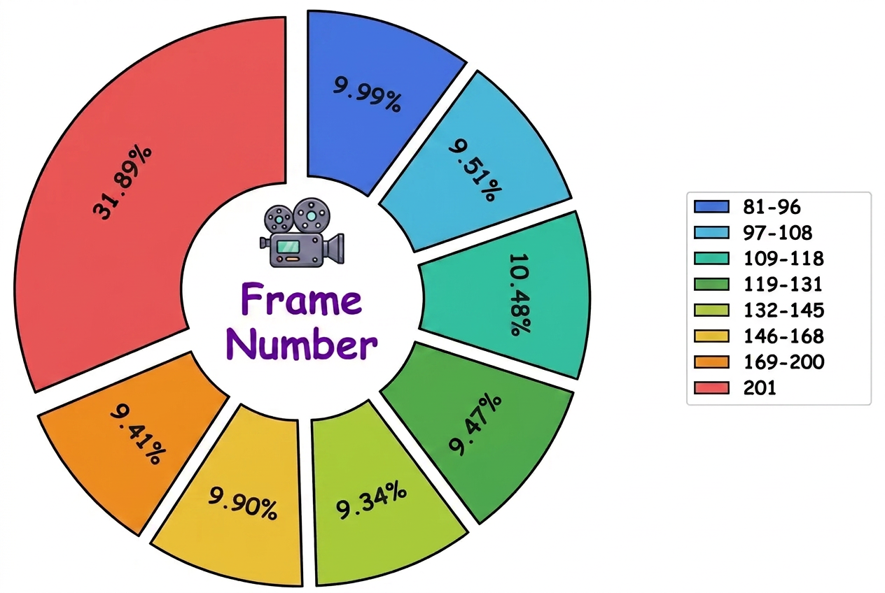
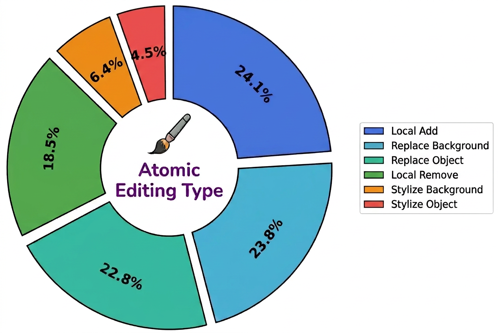
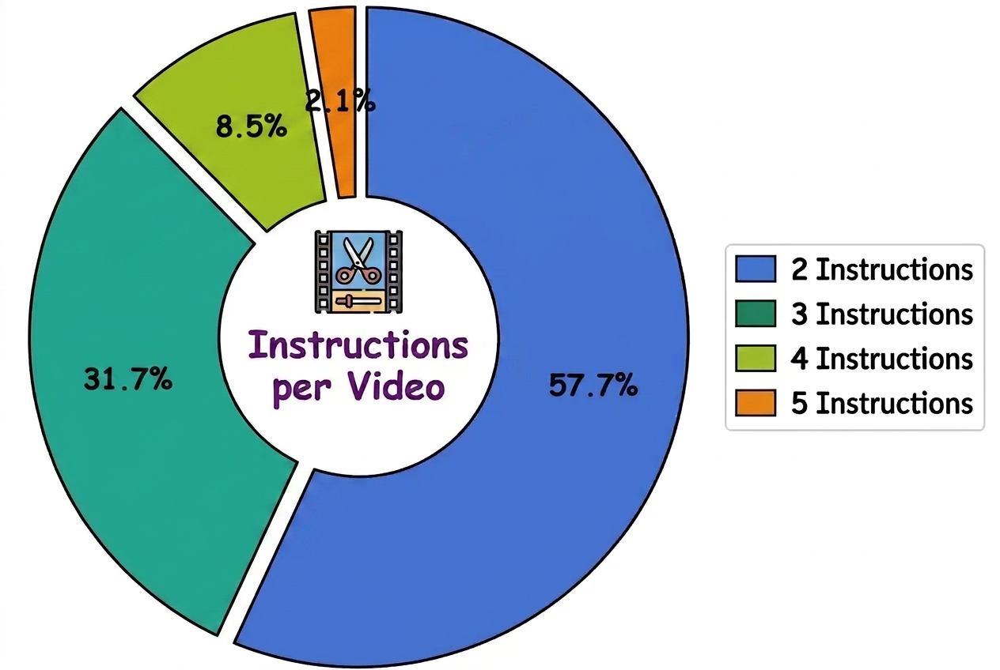
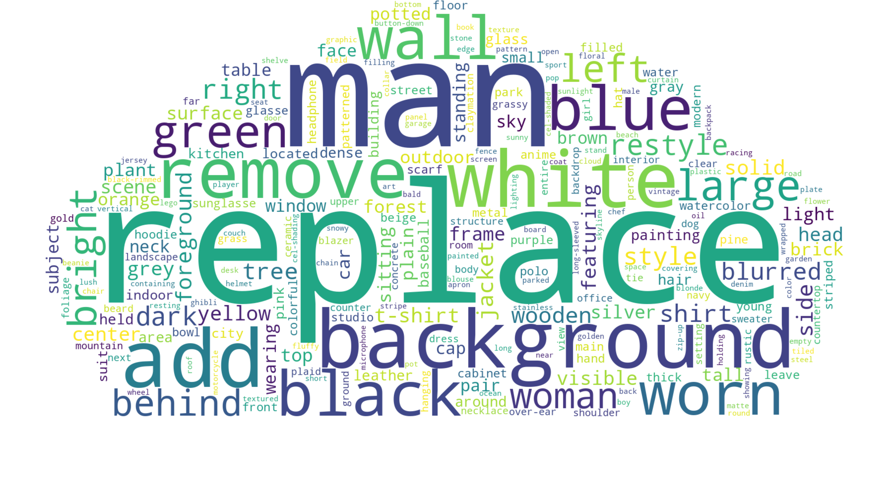
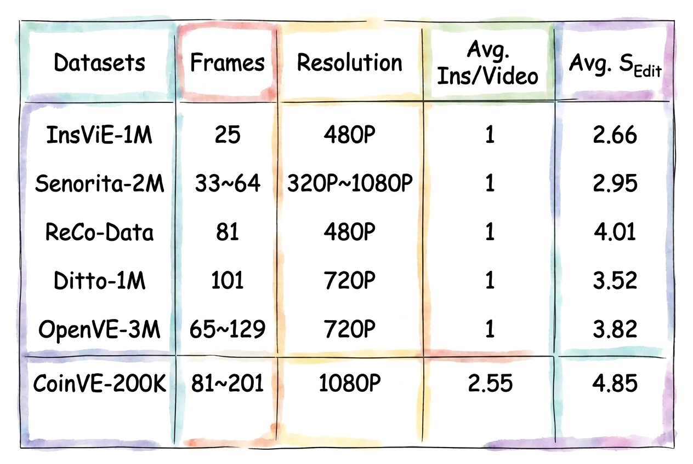
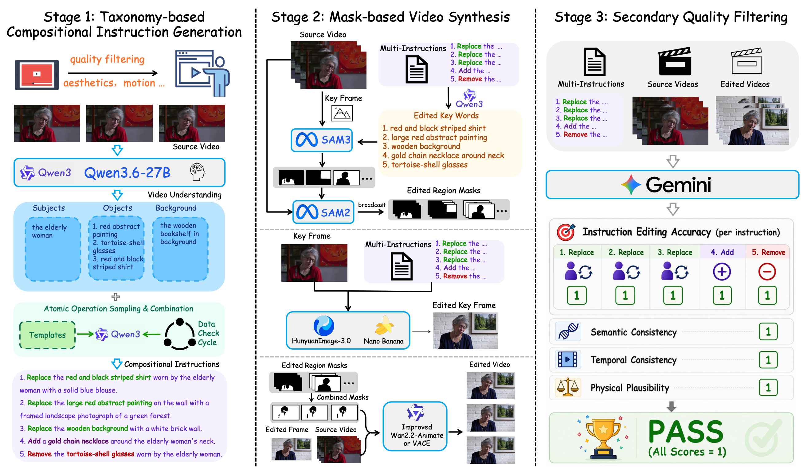
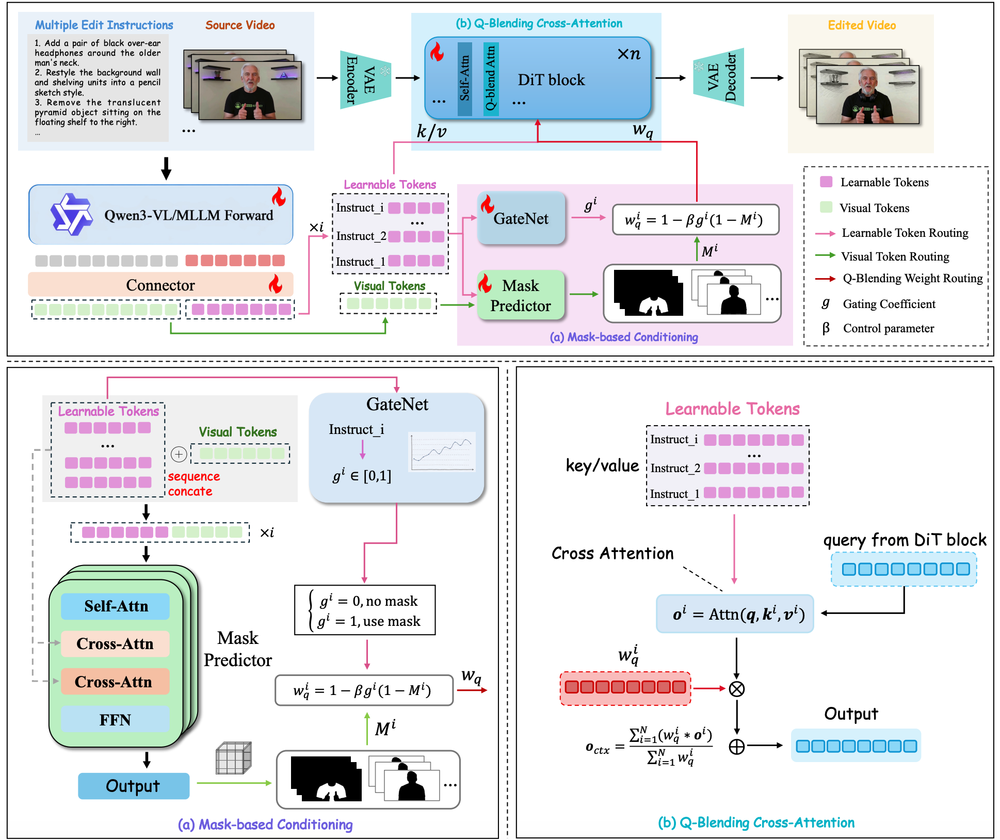

Abstract
The quality and diversity of instruction-based video editing datasets are steadily improving, yet existing datasets mainly focus on single editing operations and fall short in supporting compositional instruction-guided video editing. Particularly, multiple editing intents need to be jointly understood and faithfully executed within the same video. To address this issue, we introduce CoinVE-200K, a large-scale, high-quality dataset for Compositional Instruction-Guided Video Editing. The proposed dataset contains 1080p video-editing pairs of up to 201 frames covering diverse compositional editing scenarios, where each sample involves 2 to 5 atomic editing operations. Editing instructions span multiple target subjects, including humans, objects, and backgrounds, covering a broad range of edit types such as addition, removal, modification, and stylization. All samples are constructed through a carefully designed data generation and quality filtering pipeline to ensure instruction faithfulness, visual quality, temporal consistency, and compositional diversity. Compared with existing instruction-based video editing datasets, CoinVE-200K places a stronger emphasis on multi-intent composition, region-aware editing, and complex interactions among different editing operations. Besides, to provide a unified evaluation protocol for this challenging setting, we introduce CoinVE-Bench, a dedicated benchmark for compositional-instruction video editing, covering diverse combinations of editing subjects, operation types, and instruction complexities. We further present CoinVE-Edit, a 22B compositional video editing model built upon Wan2.1-T2V-14B and Qwen3VL-8B. CoinVE-Edit disentangles region-aware attention for different editing instructions, enabling precise multi-region editing while preserving irrelevant content and maintaining temporal coherence. Extensive experiments on CoinVE-Bench demonstrate that CoinVE-Edit achieves strong performance in instruction following, compositional editing accuracy, visual quality, and temporal consistency, providing a powerful baseline for future research on compositional instruction-guided video editing.
The CoinVE-200K contains video-editing pairs covering diverse compositional editing scenarios, where each sample involves 2 to 5 atomic editing operations. The editing instructions span multiple target subjects, including humans, objects, and backgrounds, and cover a broad range of edit types such as addition, removal, modification, and stylization.
Part 1 · CoinVE-200K
Data Statistics






Part 2 · CoinVE-Edit
Single-Instruction Video Editing on OpenVE-Bench
Quantitative Comparison
Compositional-Instruction Video Editing on CoinVE-Bench
Quantitative Comparison
| Model | Edit. Acc. | Phys. Natural. | Seman. Pres. | Video Quality | |||||||
|---|---|---|---|---|---|---|---|---|---|---|---|
| SA | SPA | EP | AN | SC | MN | CP | AQ | TQ | CQ | TS | |
| Seedance 2.0 | 85.34 | 87.71 | 88.08 | 93.19 | 95.84 | 92.87 | 93.91 | 4.47 | 19.55 | 4.41 | 0.62 |
| Kling O3 | 86.91 | 80.93 | 89.06 | 92.55 | 90.30 | 93.91 | 84.51 | 4.49 | 18.36 | 4.37 | 0.61 |
| VACE | 3.98 | 17.15 | 6.50 | 26.69 | 13.82 | 15.21 | 87.83 | 4.05 | 17.59 | 4.11 | 0.62 |
| Ditto | 34.69 | 36.41 | 40.85 | 35.96 | 47.79 | 38.48 | 51.98 | 3.59 | 17.24 | 3.96 | 0.67 |
| VINO | 83.63 | 66.75 | 89.06 | 78.09 | 82.34 | 85.91 | 61.70 | 4.06 | 17.28 | 4.08 | 0.68 |
| OmniWeaving | 59.67 | 55.94 | 61.11 | 54.49 | 66.03 | 65.10 | 75.09 | 3.79 | 17.95 | 3.84 | 0.62 |
| KiWiEdit | 76.50 | 69.92 | 80.28 | 78.37 | 78.50 | 80.76 | 70.31 | 4.14 | 19.33 | 4.30 | 0.68 |
| SAMA | 75.58 | 73.35 | 79.63 | 83.43 | 83.88 | 88.14 | 90.08 | 3.61 | 18.08 | 4.19 | 0.72 |
| CoinVE-Edit | 87.97 | 89.45 | 89.60 | 91.85 | 91.17 | 95.30 | 90.83 | 4.13 | 19.57 | 4.31 | 0.72 |
Part 3 · Methodology
Data Construction Pipeline of CoinVE-200K

Architecture of CoinVE-Edit

BibTeX
@article{coinve2026,
title = {CoinVE-200K: A Large-Scale High-Quality Dataset for Compositional Instruction-Guided Video Editing},
author = {Fuchen Long and Cong Wang and Zitao Gao and Wenhao Zhong and Yu Cheng and Xiaolu Hou and Yan Li and Xiao Cao and Xinlong Sun and Xi Chen and Yu Liu},
journal = {arXiv preprint arXiv:2608.17566},
year = {2026}
}